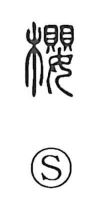

桜

Uncategorized
Kun: sakura | On: ou
cherry ・ cherry tree ・ cherry blossom
Explanation
桜 is a phono-semantic character. Its older form is given as 樱, and it employs 嬰 as the phonetic element indicating the Sino-Japanese reading; the same phonetic appears in 鸚, “parrot,” as seen in the word 鸚鵡. In Chinese usage, 桜 referred to yíngtáo, the cherry (Prunus pseudocerasus). In Japan it came to mean the cherry tree and, above all, its blossoms—celebrated in waka since antiquity and cherished today as the national flower.